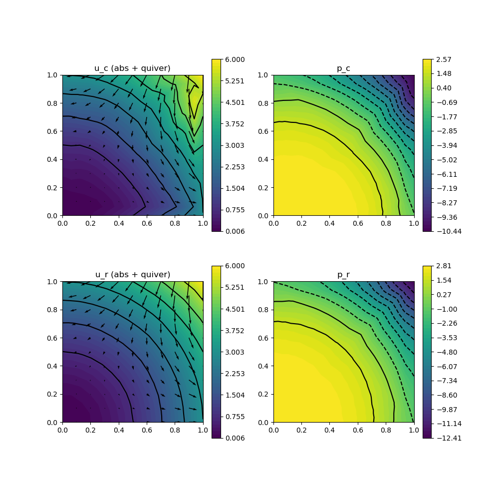

222 : Pressure-robustness 2D
This example studies two benchmarks for pressure-robust discretisations of the stationary Navier-Stokes equations that seek a velocity $\mathbf{u}$ and pressure $\mathbf{p}$ such that
\[\begin{aligned} - \mu \Delta \mathbf{u} + (\mathbf{u} \cdot \nabla) \mathbf{u} + \nabla p & = \mathbf{f}\\ \mathrm{div}(u) & = 0 \end{aligned}\]
with (possibly time-dependent) exterior force $\mathbf{f}$ and some viscosity parameter $\mu$.
Pressure-robustness is concerned with gradient forces that may appear in the right-hand side or the material derivative and should be balanced by the pressure (as divergence-free vector fields are orthogonal on gradient fields). Here, two test problems are considered:
- HydrostaticTestProblem() : Stokes (without convection term) and $\mathbf{f} = \nabla p$ such that $\mathbf{u} = 0$
- PotentialFlowTestProblem() : Navier-Stokes with $\mathbf{f} = 0$ and $\mathbf{u} = \nabla h$ for some harmonic function
In both test problems the errors of non-pressure-robust discretisations scale with $1/\mu$, while the pressure-robust discretisation solves $\mathbf{u} = 0$ exactly in test problem 1 and gives much better results in test problem 2.
module Example222_PressureRobustness2D
using GradientRobustMultiPhysics
using ExtendableGrids
using GridVisualize
# problem data
function HydrostaticTestProblem()
# Stokes problem with f = grad(p)
# u = 0, p = x^3+y^3 - 1//2
function P1_pressure!(result,x)
result[1] = x[1]^3 + x[2]^3 - 1//2
end
function P1_rhs!(result,x)
result[1] = 3*x[1]^2
result[2] = 3*x[2]^2
end
u = DataFunction([0,0]; name = "u")
p = DataFunction(P1_pressure!, [1,2]; name = "p", dependencies = "X", bonus_quadorder = 3)
∇u = DataFunction([0,0,0,0]; name = "∇u")
f = DataFunction(P1_rhs!, [2,2]; name = "f", dependencies = "X", bonus_quadorder = 2)
return p,u,∇u,f,false
end
function PotentialFlowTestProblem()
# NavierStokes with f = 0
# u = grad(h) with h = x^3 - 3xy^2
# p = - |grad(h)|^2 + 14//5
function P2_pressure!(result,x)
result[1] = - 1//2 * (9*(x[1]^4 + x[2]^4) + 18*x[1]^2*x[2]^2) + 14//5
end
function P2_velo!(result,x)
result[1] = 3*x[1]^2 - 3*x[2]^2;
result[2] = -6*x[1]*x[2];
end
u = DataFunction(P2_velo!, [2,2]; name = "u", dependencies = "X", bonus_quadorder = 2)
p = DataFunction(P2_pressure!, [1,2]; name = "p", dependencies = "X", bonus_quadorder = 4)
f = DataFunction([0,0]; name = "f")
return p,u,∇(u),f,true
end
function solve(Problem, xgrid, FETypes, viscosity = 1e-2; nlevels = 4, target_residual = 1e-10, maxiterations = 20, Plotter = nothing)
# load problem data and set solver parameters
ReconstructionOperator = FETypes[3]
p,u,∇u,f,nonlinear = Problem()
# setup classical (Problem) and pressure-robust scheme (Problem2)
Problem = IncompressibleNavierStokesProblem(2; viscosity = viscosity, nonlinear = false)
add_boundarydata!(Problem, 1, [1,2,3,4], BestapproxDirichletBoundary; data = u)
Problem2 = deepcopy(Problem)
Problem.name = "Stokes problem (classical)"
Problem2.name = "Stokes problem (p-robust)"
# assign right-hand side
add_rhsdata!(Problem, 1, LinearForm(Identity, f))
add_rhsdata!(Problem2, 1, LinearForm(ReconstructionOperator, f))
# assign convection term
if nonlinear
add_operator!(Problem,[1,1], ConvectionOperator(1, Identity, 2, 2))
add_operator!(Problem2,[1,1], ConvectionOperator(1, ReconstructionOperator, 2, 2; test_operator = ReconstructionOperator))
end
# define bestapproximation problems
BAP_L2_u = L2BestapproximationProblem(u; bestapprox_boundary_regions = [1,2,3,4])
BAP_L2_p = L2BestapproximationProblem(p; bestapprox_boundary_regions = [])
BAP_H1_u = H1BestapproximationProblem(∇u, u; bestapprox_boundary_regions = [1,2,3,4])
# define ItemIntegrators for L2/H1 error computation
L2Error_u = L2ErrorIntegrator(u, Identity)
L2Error_p = L2ErrorIntegrator(p, Identity)
H1Error_u = L2ErrorIntegrator(∇u, Gradient)
Results = zeros(Float64, nlevels, 9)
NDofs = zeros(Int, nlevels)
# loop over refinement levels
Solution, Solution2 = nothing, nothing
for level = 1 : nlevels
# uniform mesh refinement
xgrid = uniform_refine(xgrid)
# get FESpaces
FES = [FESpace{FETypes[1]}(xgrid), FESpace{FETypes[2]}(xgrid; broken = true)]
Solution = FEVector(["u_c (classic)", "p_c (classic)"],FES)
Solution2 = FEVector(["u_r (p-robust)", "p_r (p-robust)"],FES)
# solve both problems
solve!(Solution, Problem; maxiterations = maxiterations, target_residual = target_residual, anderson_iterations = 5)
solve!(Solution2, Problem2; maxiterations = maxiterations, target_residual = target_residual, anderson_iterations = 5)
# solve bestapproximation problems
BA_L2_u = FEVector("Πu",FES[1])
BA_L2_p = FEVector("πp",FES[2])
BA_H1_u = FEVector("Su",FES[1])
solve!(BA_L2_u, BAP_L2_u)
solve!(BA_L2_p, BAP_L2_p)
solve!(BA_H1_u, BAP_H1_u)
# compute L2 and H1 errors and save data
NDofs[level] = length(Solution.entries)
Results[level,1] = sqrt(evaluate(L2Error_u,Solution[1]))
Results[level,2] = sqrt(evaluate(L2Error_u,Solution2[1]))
Results[level,3] = sqrt(evaluate(L2Error_u,BA_L2_u[1]))
Results[level,4] = sqrt(evaluate(L2Error_p,Solution[2]))
Results[level,5] = sqrt(evaluate(L2Error_p,Solution2[2]))
Results[level,6] = sqrt(evaluate(L2Error_p,BA_L2_p[1]))
Results[level,7] = sqrt(evaluate(H1Error_u,Solution[1]))
Results[level,8] = sqrt(evaluate(H1Error_u,Solution2[1]))
Results[level,9] = sqrt(evaluate(H1Error_u,BA_H1_u[1]))
end
# print convergence history
print_convergencehistory(NDofs, Results[:,1:3]; X_to_h = X -> X.^(-1/2), ylabels = ["||u-u_c||", "||u-u_r||", "||u-Πu||"])
print_convergencehistory(NDofs, Results[:,4:6]; X_to_h = X -> X.^(-1/2), ylabels = ["||p-p_c||", "||p-p_r||", "||p-πp||"])
print_convergencehistory(NDofs, Results[:,7:9]; X_to_h = X -> X.^(-1/2), ylabels = ["||∇(u-u_c)||", "||∇(u-u_r)||", "||∇(u-Su)||"])
# plot
p = GridVisualizer(; Plotter = Plotter, layout = (2,3), clear = true, resolution = (1500,1000))
scalarplot!(p[1,1],xgrid,view(nodevalues(Solution[1]; abs = true),1,:), levels = 7)
vectorplot!(p[1,1],xgrid,evaluate(PointEvaluator(Solution[1], Identity)), spacing = 0.1, clear = false, title = "u_c (abs + quiver)")
scalarplot!(p[1,2],xgrid,view(nodevalues(Solution[2]),1,:), levels = 11, title = "p_c")
scalarplot!(p[2,1],xgrid,view(nodevalues(Solution2[1]; abs = true),1,:), levels = 7)
vectorplot!(p[2,1],xgrid,evaluate(PointEvaluator(Solution2[1], Identity)), spacing = 0.1, clear = false, title = "u_r (abs + quiver)")
scalarplot!(p[2,2],xgrid,view(nodevalues(Solution2[2]),1,:), levels = 11, title = "p_r")
convergencehistory!(p[1,3], NDofs, Results[:,[1,7,4]]; add_h_powers = [1,2], X_to_h = X -> X.^(-1/2), ylabels = ["|| u - u_c ||", "|| ∇(u - u_c) ||", "|| p - p_c ||"])
convergencehistory!(p[2,3], NDofs, Results[:,[2,8,5]]; add_h_powers = [1,2], X_to_h = X -> X.^(-1/2), ylabels = ["|| u - u_r ||", "|| ∇(u - u_r) ||", "|| p - p_r ||"])
# return last L2 error of p-robust method for testing
return Results[end,2]
end
# everything is wrapped in a main function
function main(; problem = 2, verbosity = 0, nlevels = 4, viscosity = 1e-2, Plotter = nothing)
# set log level
set_verbosity(verbosity)
# set problem to solve
if problem == 1
Problem = HydrostaticTestProblem
elseif problem == 2
Problem = PotentialFlowTestProblem
else
@error "No problem defined for this number!"
end
# set grid and problem parameters
xgrid = grid_unitsquare(Triangle2D) # initial grid
# choose finite element discretisation
#FETypes = [H1BR{2}, H1P0{1}, ReconstructionIdentity{HDIVRT0{2}}] # Bernardi--Raugel with RT0 reconstruction
FETypes = [H1BR{2}, H1P0{1}, ReconstructionIdentity{HDIVBDM1{2}}] # Bernardi--Raugel with BDM1 reconstruction
#FETypes = [H1CR{2}, H1P0{1}, ReconstructionIdentity{HDIVRT0{2}}] # Crouzeix--Raviart with RT0 reconstruction
# run
solve(Problem, xgrid, FETypes, viscosity; nlevels = nlevels, Plotter = Plotter)
return nothing
end
# test function that is called by test unit
# tests if hydrostatic problem is solved exactly by pressure-robust methods
function test(; Plotter = nothing)
xgrid = uniform_refine(grid_unitsquare_mixedgeometries())
testspaces = [[H1CR{2}, H1P0{1}, ReconstructionIdentity{HDIVRT0{2}}],
[H1BR{2}, H1P0{1}, ReconstructionIdentity{HDIVRT0{2}}],
[H1BR{2}, H1P0{1}, ReconstructionIdentity{HDIVBDM1{2}}]
]
error = []
for FETypes in testspaces
push!(error, solve(HydrostaticTestProblem, xgrid, FETypes, 1; nlevels = 1))
println("FETypes = $FETypes error = $(error[end])")
end
xgrid = uniform_refine(grid_unitsquare(Triangle2D))
testspaces = [
[H1P2B{2,2}, H1P1{1}, ReconstructionIdentity{HDIVRT1{2}}]
]
error = []
for FETypes in testspaces
push!(error, solve(HydrostaticTestProblem, xgrid, FETypes, 1; nlevels = 1, Plotter = Plotter))
println("FETypes = $FETypes error = $(error[end])")
end
return maximum(error)
end
endThis page was generated using Literate.jl.
Default output:
julia> Example222_PressureRobustness2D.main()
ITERATION | LSRESIDUAL | NLRESIDUAL
--------------------------------------
1 | 1.419092e-16 | 3.907408e+00
2 | 1.378938e-15 | 1.274009e+00
3 | 1.920568e-15 | 1.579942e+00
4 | 1.170392e-15 | 6.859809e-01
5 | 1.846140e-15 | 4.477920e-01
6 | 1.529739e-15 | 3.162627e-01
7 | 1.155716e-15 | 3.153493e-01
8 | 1.420763e-15 | 3.439853e-01
9 | 1.797696e-15 | 2.469638e-01
10 | 1.641705e-15 | 1.880776e-01
11 | 1.092870e-15 | 2.331640e-01
12 | 1.381838e-15 | 1.719761e-01
13 | 1.197197e-15 | 1.236650e-01
14 | 1.107903e-15 | 1.532406e-01
15 | 1.379249e-15 | 6.657050e-02
16 | 1.163109e-15 | 4.815822e-02
17 | 1.355223e-15 | 3.579211e-02
18 | 1.774704e-15 | 1.615671e-02
19 | 9.035171e-16 | 1.255390e-02
20 | 1.548999e-15 | 5.543517e-03
ITERATION | LSRESIDUAL | NLRESIDUAL
--------------------------------------
1 | 1.419092e-16 | 4.356218e+00
2 | 1.278058e-15 | 3.427807e-01
3 | 7.848435e-16 | 2.616497e-01
4 | 1.053730e-15 | 2.423814e-01
5 | 1.571847e-15 | 1.985077e-01
6 | 1.496760e-15 | 1.334100e-01
7 | 8.154312e-16 | 5.475030e-02
8 | 8.282192e-16 | 2.884838e-02
9 | 1.448981e-15 | 4.588907e-03
10 | 1.641481e-15 | 2.626320e-03
11 | 1.237367e-15 | 1.422550e-03
12 | 1.128470e-15 | 7.924977e-04
13 | 1.256964e-15 | 6.584443e-04
14 | 1.504357e-15 | 6.852785e-04
15 | 1.007862e-15 | 2.363456e-04
16 | 1.145592e-15 | 1.426986e-05
17 | 1.695295e-15 | 5.132736e-06
18 | 1.402051e-15 | 1.535328e-06
19 | 1.109952e-15 | 2.103704e-07
20 | 1.347714e-15 | 6.903051e-08
ITERATION | LSRESIDUAL | NLRESIDUAL
--------------------------------------
1 | 2.160516e-16 | 2.498491e+00
2 | 1.326430e-15 | 4.264672e-01
3 | 1.265213e-15 | 1.466834e-01
4 | 1.287295e-15 | 1.233691e-01
5 | 9.399774e-16 | 2.575874e-02
6 | 1.350456e-15 | 1.584287e-02
7 | 1.384087e-15 | 1.023577e-02
8 | 1.324972e-15 | 1.453320e-03
9 | 1.213148e-15 | 5.978589e-04
10 | 1.087756e-15 | 4.218207e-04
11 | 1.571643e-15 | 1.503106e-04
12 | 1.332983e-15 | 4.639181e-05
13 | 1.348543e-15 | 7.099509e-06
14 | 1.600856e-15 | 2.661706e-06
15 | 1.413121e-15 | 9.314383e-07
16 | 1.013398e-15 | 3.788933e-07
17 | 1.503292e-15 | 2.119052e-07
18 | 1.342238e-15 | 4.316282e-08
19 | 1.334596e-15 | 1.071468e-08
20 | 1.332445e-15 | 5.244142e-09
ITERATION | LSRESIDUAL | NLRESIDUAL
--------------------------------------
1 | 2.160516e-16 | 2.776075e+00
2 | 1.141235e-15 | 4.423908e-02
3 | 9.929339e-16 | 3.071828e-02
4 | 1.523266e-15 | 3.349017e-02
5 | 1.233338e-15 | 4.497733e-03
6 | 1.495082e-15 | 1.488965e-03
7 | 1.055903e-15 | 9.470225e-04
8 | 1.112556e-15 | 3.312038e-04
9 | 1.433581e-15 | 5.202048e-05
10 | 1.314323e-15 | 1.296677e-05
11 | 1.453101e-15 | 1.988109e-06
12 | 1.258341e-15 | 5.441005e-07
13 | 1.496480e-15 | 1.996136e-07
14 | 1.601577e-15 | 4.121641e-08
15 | 1.193334e-15 | 9.881626e-09
16 | 1.091387e-15 | 3.023854e-09
17 | 1.345621e-15 | 1.504866e-09
18 | 1.329710e-15 | 4.526088e-10
19 | 1.215027e-15 | 3.113983e-11
ITERATION | LSRESIDUAL | NLRESIDUAL
--------------------------------------
1 | 1.982661e-16 | 1.399826e+00
2 | 1.227596e-15 | 1.018196e-01
3 | 1.333418e-15 | 1.753466e-02
4 | 1.175063e-15 | 3.761296e-03
5 | 1.128897e-15 | 6.421894e-04
6 | 1.391366e-15 | 2.238335e-04
7 | 1.175505e-15 | 1.034672e-04
8 | 1.378446e-15 | 2.554042e-05
9 | 1.241183e-15 | 1.210502e-05
10 | 1.212512e-15 | 2.795871e-06
11 | 1.182446e-15 | 3.545141e-07
12 | 1.318838e-15 | 9.131552e-08
13 | 1.219692e-15 | 2.694435e-08
14 | 1.289946e-15 | 3.825650e-09
15 | 1.133240e-15 | 1.085089e-09
16 | 1.175019e-15 | 3.259655e-10
17 | 1.302820e-15 | 7.760341e-11
ITERATION | LSRESIDUAL | NLRESIDUAL
--------------------------------------
1 | 1.982661e-16 | 1.552312e+00
2 | 1.387003e-15 | 1.953562e-03
3 | 1.456618e-15 | 6.017487e-04
4 | 1.353911e-15 | 2.624481e-04
5 | 1.375636e-15 | 1.586135e-04
6 | 1.257549e-15 | 4.238678e-05
7 | 1.377169e-15 | 1.525526e-05
8 | 1.390464e-15 | 6.411477e-06
9 | 1.427473e-15 | 1.331816e-06
10 | 1.302651e-15 | 1.827395e-07
11 | 1.263166e-15 | 6.848769e-08
12 | 1.329326e-15 | 2.056931e-08
13 | 1.242473e-15 | 6.517358e-09
14 | 1.299069e-15 | 1.560778e-09
15 | 1.382703e-15 | 2.615672e-10
16 | 1.327576e-15 | 5.853313e-11
ITERATION | LSRESIDUAL | NLRESIDUAL
--------------------------------------
1 | 3.153906e-16 | 7.397901e-01
2 | 1.257831e-15 | 1.830527e-02
3 | 1.371897e-15 | 3.051583e-03
4 | 1.376716e-15 | 5.731529e-04
5 | 1.346460e-15 | 1.643458e-04
6 | 1.316739e-15 | 3.841392e-05
7 | 1.385862e-15 | 9.291532e-06
8 | 1.379128e-15 | 1.794343e-06
9 | 1.319088e-15 | 3.231484e-07
10 | 1.341845e-15 | 9.050398e-08
11 | 1.326289e-15 | 1.687268e-08
12 | 1.310344e-15 | 3.822641e-09
13 | 1.317885e-15 | 1.045798e-09
14 | 1.301584e-15 | 1.989625e-10
15 | 1.269977e-15 | 4.038372e-11
ITERATION | LSRESIDUAL | NLRESIDUAL
--------------------------------------
1 | 3.153906e-16 | 8.193835e-01
2 | 1.338553e-15 | 1.666758e-04
3 | 1.423264e-15 | 4.118692e-05
4 | 1.385090e-15 | 1.348679e-05
5 | 1.404850e-15 | 3.927236e-06
6 | 1.499490e-15 | 1.255630e-06
7 | 1.351350e-15 | 3.987222e-07
8 | 1.313945e-15 | 7.610895e-08
9 | 1.321495e-15 | 1.321940e-08
10 | 1.411681e-15 | 3.357081e-09
11 | 1.374781e-15 | 8.720959e-10
12 | 1.346565e-15 | 1.426552e-10
13 | 1.419256e-15 | 2.991987e-11
ndofs | ||u-u_c|| order | ||u-u_r|| order | ||u-Πu|| order |
============|==========================|==========================|==========================|
70 | 1.131e+00 0.00 | 6.883e-01 0.00 | 5.401e-02 0.00 |
250 | 6.404e-01 0.89 | 1.009e-01 3.02 | 1.276e-02 2.27 |
946 | 2.184e-01 1.62 | 6.151e-03 4.20 | 3.026e-03 2.16 |
3682 | 7.007e-02 1.67 | 9.825e-04 2.70 | 7.311e-04 2.09 |
ndofs | ||p-p_c|| order | ||p-p_r|| order | ||p-πp|| order |
============|==========================|==========================|==========================|
70 | 1.595e+00 0.00 | 1.313e+00 0.00 | 1.153e+00 0.00 |
250 | 1.039e+00 0.67 | 5.913e-01 1.25 | 5.796e-01 1.08 |
946 | 4.477e-01 1.26 | 2.901e-01 1.07 | 2.900e-01 1.04 |
3682 | 1.939e-01 1.23 | 1.450e-01 1.02 | 1.450e-01 1.02 |
ndofs | ||∇(u-u_c)|| order | ||∇(u-u_r)|| order | ||∇(u-Su)|| order |
============|==========================|==========================|==========================|
70 | 1.761e+01 0.00 | 9.635e+00 0.00 | 1.139e+00 0.00 |
250 | 1.462e+01 0.29 | 1.954e+00 2.51 | 5.666e-01 1.10 |
946 | 8.873e+00 0.75 | 3.876e-01 2.43 | 2.817e-01 1.05 |
3682 | 5.237e+00 0.78 | 1.511e-01 1.39 | 1.403e-01 1.03 |